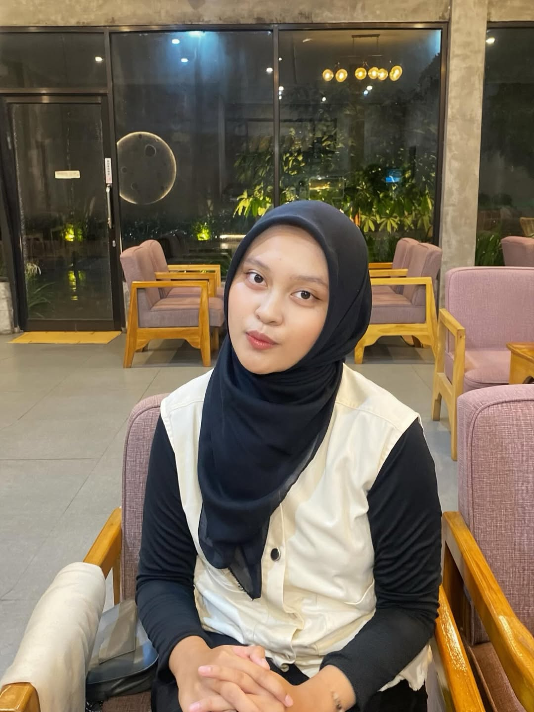

Klik kadonya yaa ✨

selamat ulang tahunn aliyaa semoga semua hal baik yang kamu perjuangkan pelan-pelan jadi kenyataan. Tetap semangat, aku percaya kamu bisa. 🎉
Tap bukunya untuk membuka & menutup kembali 📖